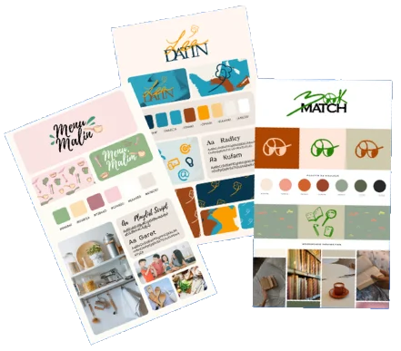

Identités visuelles
Des chartes graphiques de A à Z
Au fil de mes études et de mes projets, j'ai souvent pris en charge la partie visuelle : chartes graphiques, logos, palettes, maquettes et flyers. J'aime transformer une idée en identité cohérente et impactante.